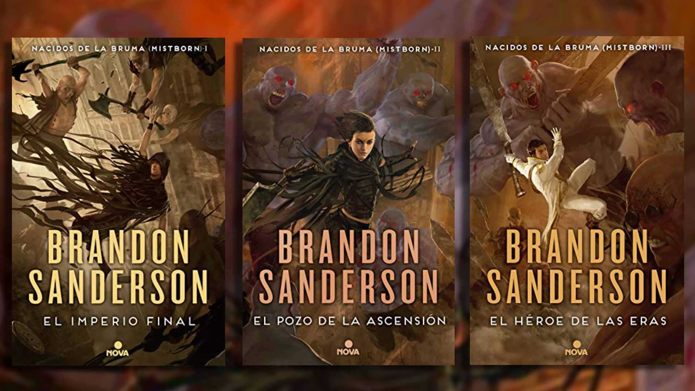

Boxeo
Practico deportes de contacto desde hace 5 años a nivel amateur. Soy un gran fan, me permiten hacer deporte y superarme a mi mismo. Principalmente he entrenado Krav-Maga y Boxeo.

Lectura
Desde pequeño me ha gustado leer sagas de fantasía y suspense. Actualmente mis libros favoritos son de la saga de "Nacidos de la bruma " y " El archivo de las tormentas" de Brandom Sanderson.

Videojuegos
He sido gamer toda mi vida, sobretodo me gustan los juegos de ordenador.Entre mis juegos favoritos está "League of Legends", "World of Warcraft" y juegos de pelea.